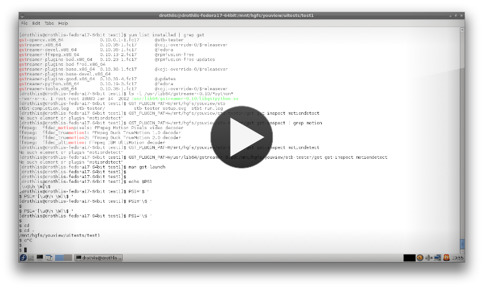

stb-tester is an open-source system for automated testing of set-top boxes and similar devices.
stb-tester is a collection of small1 command-line tools:
stbt record will record a test case by listening for remote-control keypresses, taking screenshots from the set-top box as it goes. You then (manually) crop the screenshots to the region of interest, and (optionally) edit the generated test script, which will look something like this:
press("MENU")
wait_for_match("Guide.png")
press("RIGHT")
wait_for_match("Settings.png")
stbt run will play back the given test script, returning an exit status of success or failure for easy integration with your test reporting system.
Watch us record and play back a test script in XXX minutes:
Modularity
stb-tester is written on top of GStreamer, a library of media-handling components.
We use video-capture hardware with video-for-linux drivers, using GStreamer's v4l2src source element. You could equally use the ximagesrc GStreamer element to grab video from an X11 window running a VM, or the tcpclientsrc element to receive video streamed over the network (perhaps from a custom framebuffer source element2 installed on the system under test).
Even the TV signal into the set-top box can be controlled via the GStreamer pipeline: We are writing a GStreamer element for DekTec DVB modulators.
stb-tester's image matching is handled by a GStreamer templatematch element that is a thin wrapper around the OpenCV computer vision library.
stb-tester's image matching isn't quite real-time: on our hardware it manages 5-6 frames per second. stb-tester uses a GStreamer queue element that can be configured to drop frames so that the test runs in real time, or to queue up every single frame when the test demands it (e.g. for measuring animation smoothness3).
To control the set-top box stb-tester supports hardware infra-red emitters via LIRC (Linux Infrared Remote Control). We have also written a custom TCP-based "virtual remote" for controlling set-top boxes instrumented with the corresponding listener4.
The test scripts are plain python
In the video you saw us replace successive calls to press with the convenience function press_until_match. You can provide your own such functions — it's just python!
Keeping separate copies of the same asset (like the Guide.png template in our example) for each test script is a maintenance nightmare: You don't want to re-record all your tests each time the UI team tweaks the graphics! So pull out the common steps into a separate python module, and rewrite the script to:
import preconditions preconditions.network_settings_screen() ...
stbt run will search for the template image in the directory that contains the file calling wait_for_match, so you can keep all common assets alongside your preconditions module.
Do you want to trigger a power failure from your test scripts? Buy a network-controlled power supply and write a python library wrapping its HTTP API. (We have plans to do just that.)
Take control of your test infrastructure
The interface to stbt run is very simple and Unixy: Run it as a sub-process from your own test scheduler5, then collect the exit status and logs to be processed by your own reporting infrastructure.
Your integration test team can run their test scripts as black box tests, using video-capture devices and infra-red emitters.
Your UI team can run (a subset of?) the very same tests, with zero hardware costs, against a VM running the set-top box software: Use a GStreamer X11 source element for video input, and a TCP-based "virtual remote" to drive the set-top box VM. This is quite a powerful tool to have on every developer's desk!
Or integrate stb-tester with your build system to run regression tests on every commit. Even before your release has reached the test team, it has passed a very high bar!
stb-tester was initially developed at YouView TV, and is released under the LGPL. Learn more at http://stb-tester.com.
| [1] | As of release 0.3: 700 lines of python code, and a GStreamer plugin totalling 500 lines of C code. stb-tester is essentially an integration exercise: GStreamer, OpenCV, LIRC and Video4Linux do all the work. |
| [2] | GStreamer already has a DirectFB sink element; we have plans to write a DirectFB source. |
| [3] | We haven't implemented the infrastructure for test scripts to easily measure animation smoothness, just yet. |
| [4] | We haven't open-sourced our virtual remote, but plan to do so after re-writing it to use the LIRC protocol. |
| [5] | "Test scheduler" sounds fancy but you'd hope it's just a simple shell script. |